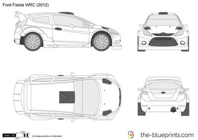
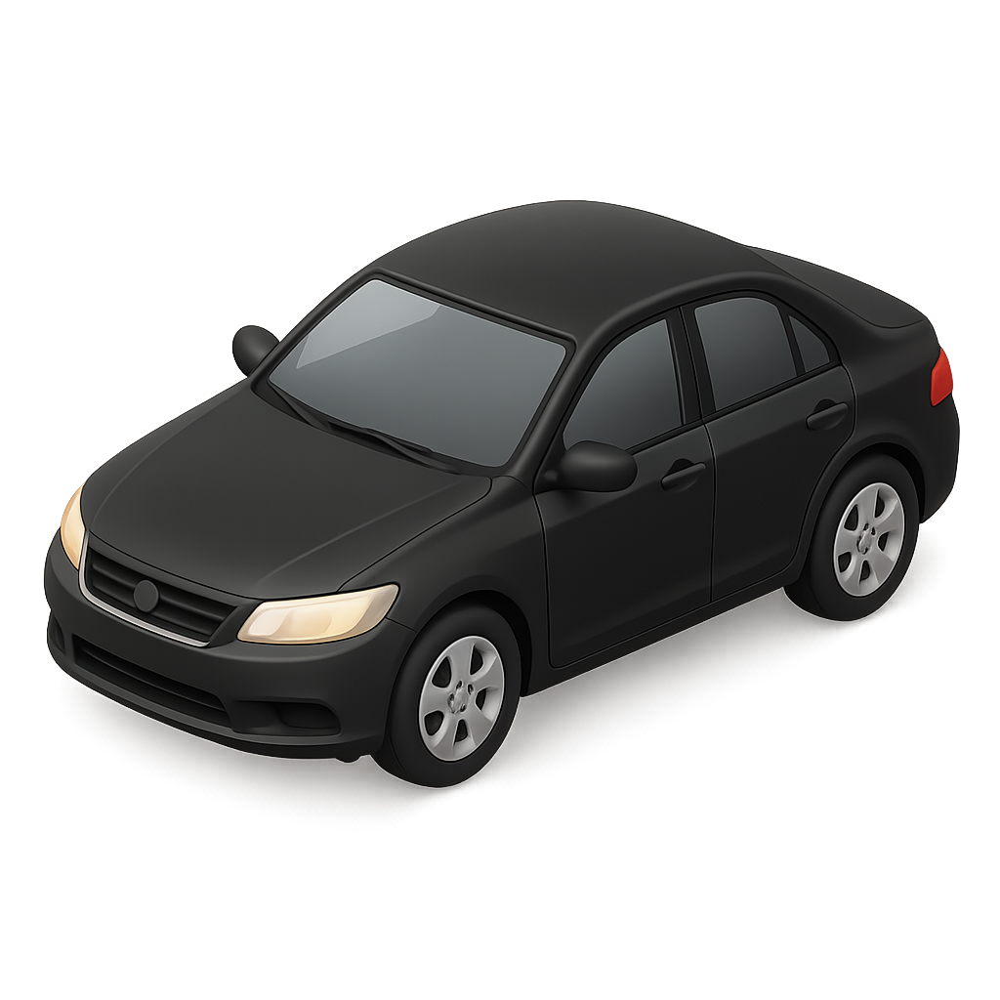

Ford Fiesta 2012 года

Ford Fiesta — популярный субкомпактный автомобиль, выпускавшийся с 1976 по 2023 год в кузовах хэтчбек и седан.
Известен своей отличной управляемостью, спортивной динамикой и экономичностью.
Последние поколения оснащались бензиновыми двигателями (1.0-1.6 л, включая EcoBoost) и дизелями, работая с МКПП или роботом Powershift.
Модель отличается современным дизайном, высоким уровнем безопасности и комфорта.

